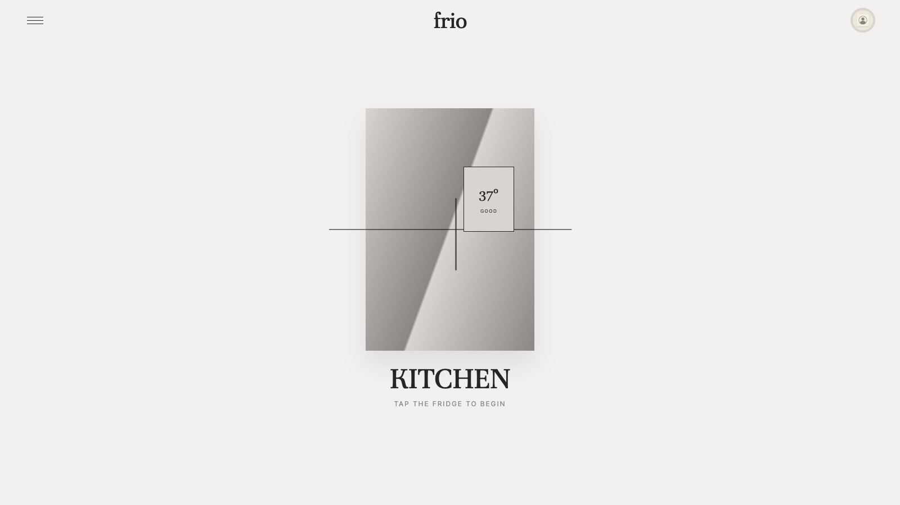
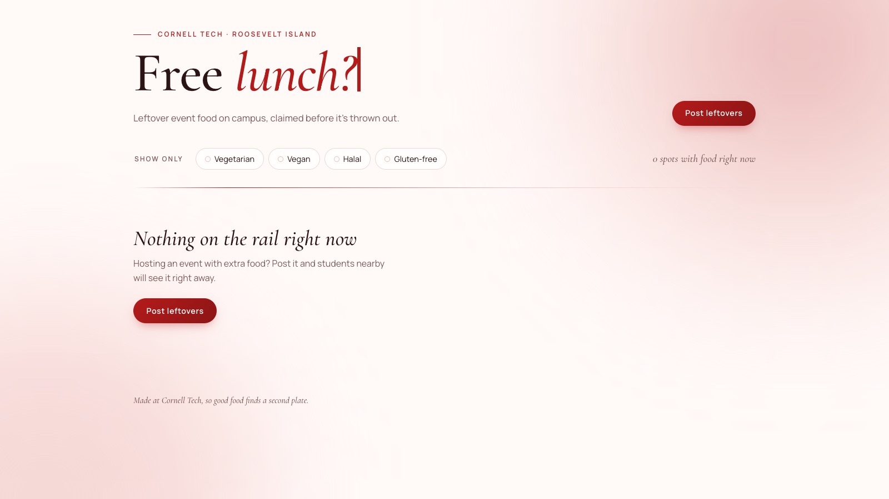

UX & Product Designer · Cornell Tech M.S. Connective Media
Hello, I’m
Wiam Salih
I turn complex financial and everyday information into clear, trustworthy experiences.

User-centered designer and forward learner, with an engineering background at AWS and Leidos.
Cornell Tech
M.S. Connective Media, 2026–2028
UX & Product Design
Design for Fintech
New York, NY
Seeking Summer 2027 design internships
Designed to be understood.
I’m a user-centered designer and forward learner. My engineering background at AWS and Leidos helps me design products that can actually ship.
I work across user research, user flows, Figma prototyping, and front-end builds. My research on trust and decision-making in AI interfaces shapes how I design for explainable, accessible, and trustworthy products.
Selected case studies.
BridgeMedical Equipment Approval App
A mobile app that maps the insurance approval journey for wheelchairs and medical equipment. It flags stalled steps, explains denials in plain language, and accepts voice and photo input.
Read case study
frioSmart Fridge App for Reducing Food Waste
A smart-fridge companion that tracks temperature, expiration dates, and inventory, then plans meals around shared ingredients so food is used before it spoils.
Read case studyPortfolio Management Dashboard
A client-oriented investment dashboard built around practical portfolio questions, bringing asset allocation, performance attribution, and risk into one view.
Read case study
Second ServingCampus Food Waste Platform
A deployed web app that connects students with leftover event food, instrumented with 13 user events to power funnel, retention, and A/B test dashboards.
Read case studyOther work
- AI Financial Advisory Chatbot A conversational assistant that turns financial questions into fast, accessible answers. Built the data pipeline, model workflow, and deployment. (live demo, opens in a new tab)
- Interactive Photo Gallery Took an annotated static design to a working gallery with a draggable slider, thumbnail strip, and live position counter using AI-assisted prototyping. (live prototype, opens in a new tab)
- Oracle Analytics Retail Intelligence Turned raw retail data into predictive insight and decision-ready dashboards, with business questions shaping the metrics and layout. (case study, opens in a new tab)
-
Skylar: AI Incident Detection Platform An end-to-end incident investigation platform with LLM-powered analysis and operational dashboards, processing 10,000+ daily events and reducing investigation time by 40%. [ADD: link to Skylar demo or repo]
- Soccer League Relational Database A normalized schema for teams, games, coaches, and players, designed for clean relationships and data integrity. (source code, opens in a new tab)
- Palette Perfection A Java app that automates paint pricing, labor cost, and customer-facing business rules with an object-oriented structure. (source code, opens in a new tab)
Selected experience.
Leidos
- Partnered with FAA customers to clarify requirements, demonstrate functionality, and document issues, translating end-user needs for engineering teams on mission-critical air traffic management software.
- Validated air traffic management software across physical and virtual environments before customer acceptance.
Amazon Web Services
- Developed and tested an internal Amazon Lex conversational assistant supporting 1,000+ cloud support cases.
- Built a Python-based anomaly detection system that cut investigation time by more than 10 hours per week.
George Mason University
- Designed dashboards around stakeholder needs, turning operational data into clear, actionable insights for leadership.
- Gathered stakeholder requirements and maintained internal web applications.
LaunchBox Accelerator
- Used user research and product analytics to find pain points in the onboarding flow and redesigned the user journey, increasing user activation by 15%.
- Prototyped, tested, and iterated an analytics platform from concept to MVP in eight weeks with engineering and business stakeholders.
Education
Get in touch.
Open to Summer 2027
design internships.
Seeking UX design, product design, and UX research internships, especially work that makes financial information clearer and more trustworthy.
- UX Design
- Product Design
- UX Research
- Design for Fintech